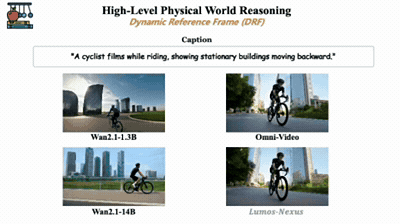
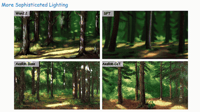
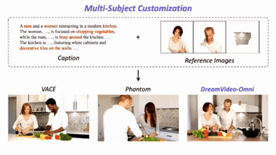
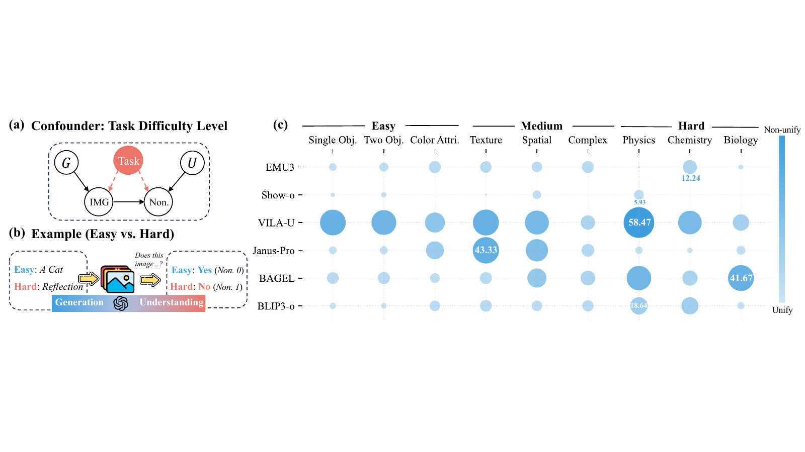
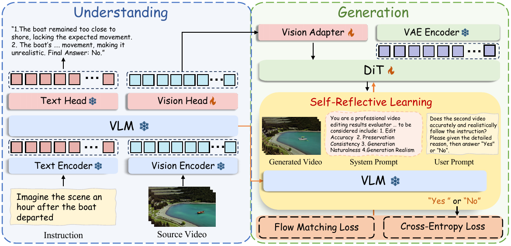
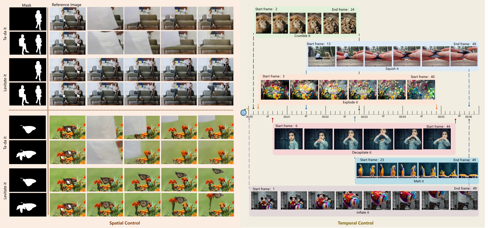
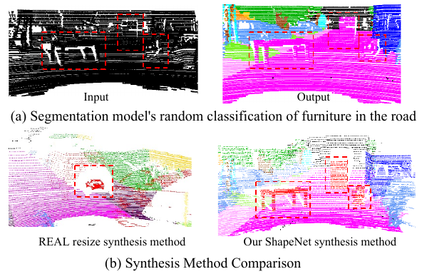
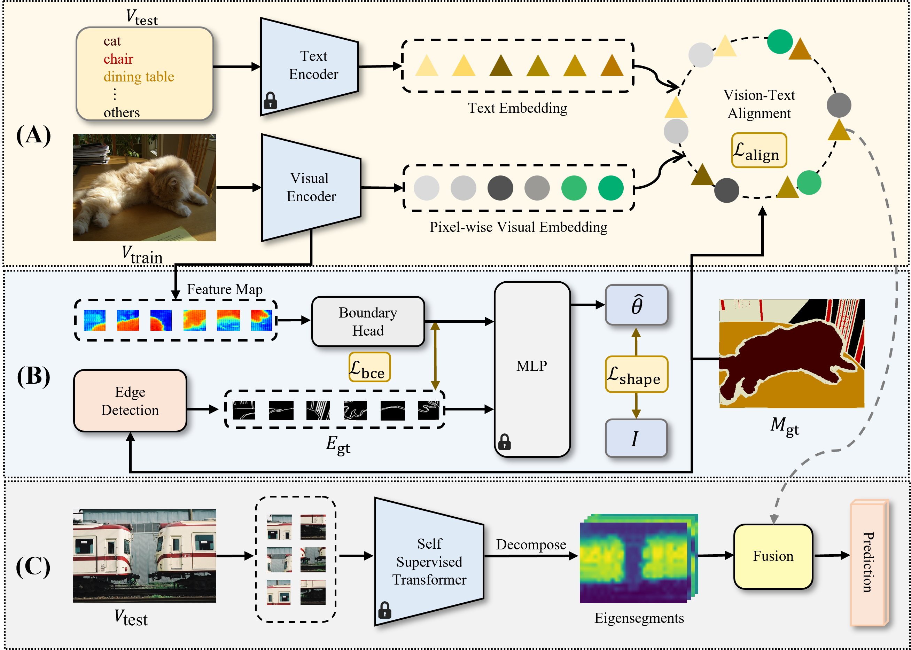

I am currently a third-year Ph.D. candidate in Artificial Intelligence at The Hong Kong University of Science and Technology (HKUST), supervised by Prof. Yike Guo and Prof. Wenhan Luo. Before joining HKUST, I received my M.Sc. in Computer Science and Technology and B.Eng. in Communication Engineering from Xidian University. During my master's studies, I was advised by Prof. Licheng Jiao.
I have conducted research internships with the Kling Team at Kuaishou, the Tongyi Wan Team at Alibaba, and AIR, Tsinghua University, where I worked with Prof. Hao Zhao and Prof. Guyue Zhou.
Research Interests
My research lies at the intersection of multimodal understanding and controllable visual generation, with a focus on:
- Controllable video generation and editing
- Unified multimodal understanding and generation
- Post-training and reinforcement learning for multimodal models
I am open to collaborations in any form. I am also actively seeking internship opportunities in industry or academia. If you would like to collaborate or have a suitable opportunity, please feel free to reach out.
News
- Our work ReBind on multi-reference video editing is now available.
- Our paper Lumos-Nexus was accepted to ECCV 2026.
- Our paper HiPrompt was accepted by IJCV in 2026.
- Our work AesRM on expert-aligned video aesthetics is now available.
- Our work DreamVideo-Omni on controllable multi-subject video customization is now available.
- Our paper Turning Internal Gap into Self-Improvement was accepted to ICLR 2026.
- Our work ReViSE on reason-informed video editing is now available.
- Our work VFX Creator on controllable animated visual-effect generation is now available.
- Our paper LiON was accepted to AAAI 2025.
- Our paper TOD3Cap was accepted to ECCV 2024.
- I commenced my doctoral journey at HKUST under the supervision of Prof. Yike Guo and Prof. Wenhan Luo.
Publications
Google Scholar* denotes equal contribution.





Turning Internal Gap into Self-Improvement: Promoting Generation–Understanding Unification in MLLMs
International Conference on Learning Representations (ICLR), 2026






Research Experience
Kling Team, Kuaishou
Research Intern · Beijing, China
Tongyi Wan Team, Alibaba
Research Intern · Beijing, China
Institute for AI Industry Research, Tsinghua University
Research Intern · Beijing, China
Academic Service & Honors
Academic Service
Reviewer: NeurIPS, ICLR, CVPR, ICML, ECCV, AAAI, IJCAI, and IEEE Transactions on Image Processing.
Teaching Assistant: AMCC5110 Programming for Arts and Creativity; EMIA6500(G) AI Animation and Video Generation.
Honors & Awards
- National Scholarship for Graduate Students, 2021
- CETC Leis Scholarship, Top 1%, 2021
- Mathematical Contest in Modeling, Meritorious Winner